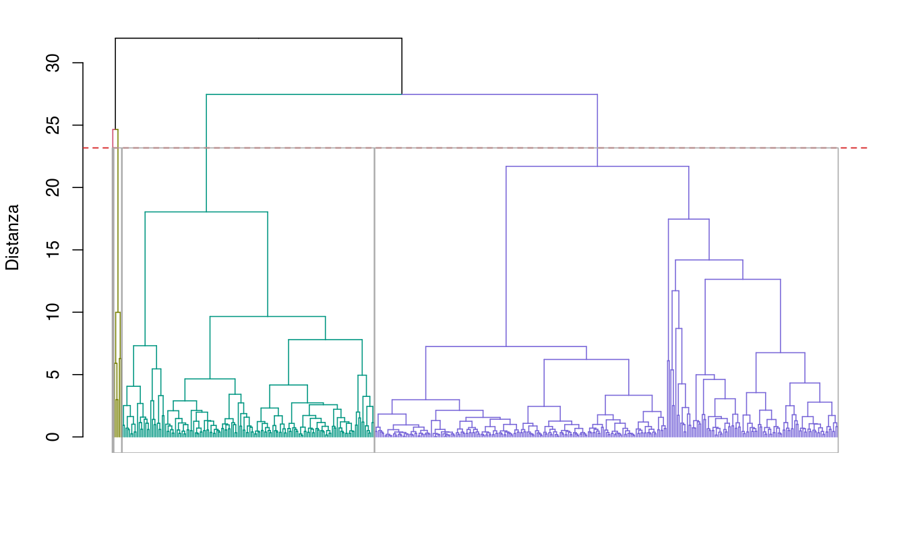
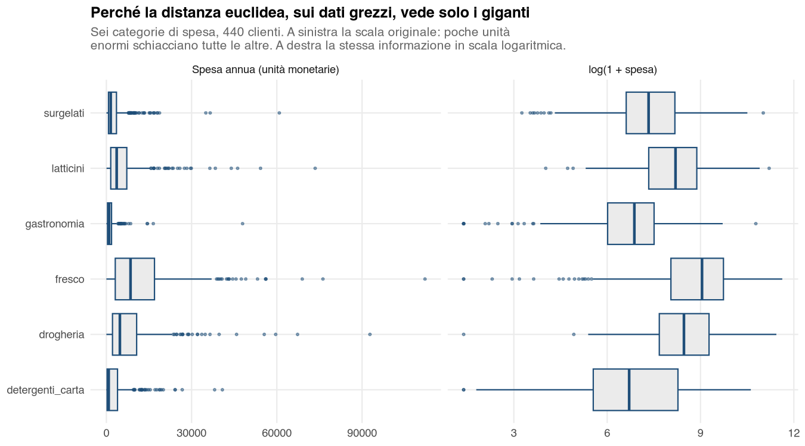
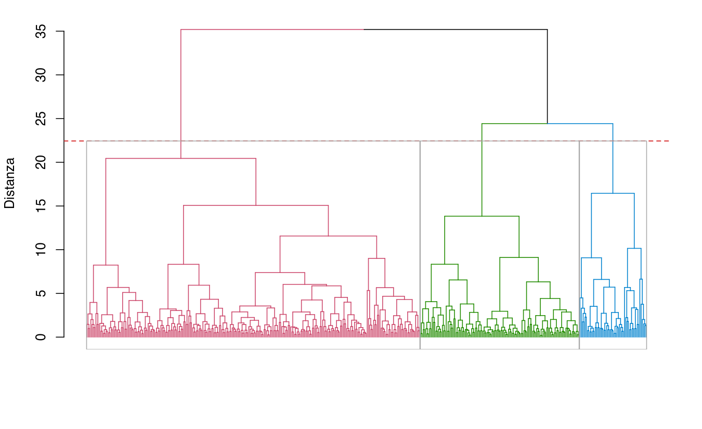
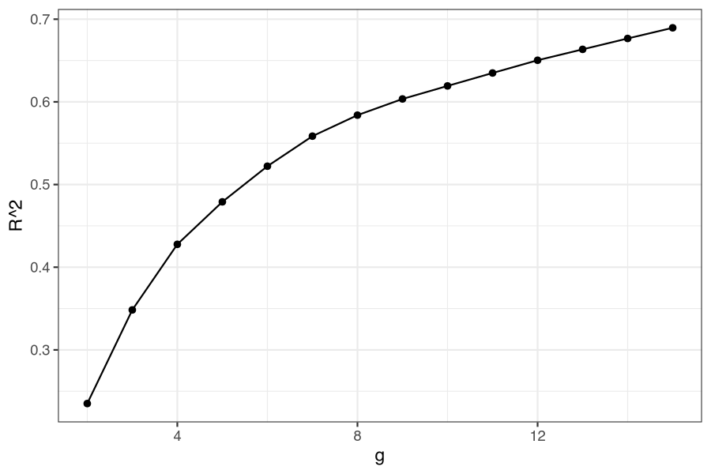

37 Caso reale — Segmentare clienti veri: un distributore all’ingrosso
37.1 La situazione
Un distributore all’ingrosso serve 440 clienti: ristoranti, bar e hotel da un lato (canale Horeca), negozi e supermercati dall’altro (canale Dettaglio). Di ciascuno conosce la spesa annua in sei categorie: fresco, latticini, drogheria, surgelati, detergenti e carta, gastronomia.
Il canale è già noto per ogni cliente, ed è la segmentazione che l’azienda usa oggi. La domanda è se i comportamenti d’acquisto dicano qualcosa in più del canale: se esistano gruppi che il canale non vede.
37.2 I dati, e il primo problema
Spesa annua per categoria (unità monetarie; la fonte non indica la valuta)
| Categoria | Mediana | Media | Massimo | Asimmetria |
|---|---|---|---|---|
| fresco | 8.504 | 12.000 | 112.151 | 2,6 |
| latticini | 3.627 | 5.796 | 73.498 | 4,1 |
| drogheria | 4.756 | 7.951 | 92.780 | 3,6 |
| surgelati | 1.526 | 3.072 | 60.869 | 5,9 |
| detergenti_carta | 816 | 2.881 | 40.827 | 3,6 |
| gastronomia | 966 | 1.525 | 47.943 | 11,2 |
Media sistematicamente più alta della mediana, massimi fino a cinquanta volte la mediana, asimmetrie fra 2,6 e 11: è la forma tipica dei dati di spesa, dove pochi clienti enormi convivono con molti clienti piccoli. Sui dati sintetici questo non succede quasi mai. Qui succede, e cambia il risultato.
37.3 Passo 1 — L’analisi fatta come da manuale
Menu: Analisi → AnalisiMercato → Cluster Analysis → Cluster Analysis Gerarchica
Sei variabili di spesa, Standardizza le variabili attivo, Euclidea, Ward: esattamente la configurazione del caso sintetico. Numero di gruppi → 4, Nome della variabile di output → cluster_grezzi, Etichetta cluster attivo.

Appartenenza ai gruppi (k = 4)
| Cluster | Numero di elementi |
|---|---|
| 1 | 153 |
| 2 | 281 |
| 3 | 5 |
| 4 | 1 |
Il quarto segmento contiene un cliente. Il terzo ne contiene cinque. Due segmenti su quattro sono occupati da sei clienti su 440, e i restanti 434 sono schiacciati in due gruppi.
Non è un difetto di Ward: è Ward che fa il suo mestiere. Il criterio minimizza la devianza interna, e un cliente che spende 47.943 di gastronomia contro una mediana di 966 (e 36.534 di surgelati contro 1.526) contribuisce alla devianza più di centinaia di clienti normali messi insieme. Isolarlo è, per quel criterio, la mossa più redditizia.
Guardando le partizioni a diversi \(k\) si vede la gerarchia spendere i primi tagli sugli outlier:
| k | Dimensioni dei gruppi | ARI con il canale |
|---|---|---|
| 2 | 434 / 6 | 0,023 |
| 3 | 153 / 281 / 6 | 0,486 |
| 4 | 153 / 281 / 5 / 1 | 0,486 |
| 5 | 153 / 177 / 104 / 5 / 1 | 0,298 |
A \(k = 2\) la partizione non ha nessuna relazione con il canale (ARI 0,023): la prima divisione del mercato, secondo l’algoritmo, è fra sei giganti e tutti gli altri.
37.4 Passo 2 — La preparazione che il metodo presuppone
La distanza euclidea somma differenze al quadrato, e su una scala di spesa quelle differenze sono dominate dai valori grandi. La trasformazione standard per i dati di spesa è il logaritmo, che comprime la coda senza toccare l’ordinamento: in jamovi si crea con Dati → Calcola una variabile per categoria, LN(1 + fresco) e così via.

| Categoria | Asimmetria prima | Asimmetria dopo |
|---|---|---|
| fresco | +2,56 | −1,58 |
| latticini | +4,05 | −0,22 |
| drogheria | +3,59 | −0,67 |
| surgelati | +5,91 | −0,35 |
| detergenti_carta | +3,63 | −0,24 |
| gastronomia | +11,15 | −1,09 |
Cambia la domanda a cui si risponde, e va dichiarato. Sulla scala originale due clienti distano per la differenza di spesa: spese di 100.000 e 90.000 sono vicine, 1.000 e 500 sono vicinissime. Sulla scala logaritmica distano per il rapporto: 1.000 e 500 diventano lontane quanto 100.000 e 50.000. Per una segmentazione comportamentale — «quanto compra questo cliente in ciascuna categoria, rispetto agli altri» — è il rapporto a contare, e il logaritmo è la scelta adatta. Resta però una segmentazione sui livelli di acquisto, non sulla sola composizione del paniere: due clienti con le stesse quote, uno con volumi doppi, restano lontani, e su questi dati circa un terzo della distanza fra i clienti viene dal volume complessivo di spesa. Il conto è questo: il profilo di ciascun cliente (i sei logaritmi standardizzati) si scompone nella sua media, che misura il livello di spesa, e negli scarti da quella media, che ne misurano la composizione; la parte dovuta alla media vale il 34% della somma delle distanze euclidee al quadrato fra tutte le coppie di clienti. Per segmentare sulla composizione pura servirebbero le quote di ciascuna categoria sulla spesa totale del cliente. Per una segmentazione che voglia dare peso alle differenze assolute di valore economico — «quanto vale questo cliente» — il logaritmo può essere meno appropriato, anche se con distribuzioni così asimmetriche resta spesso utile: la scelta dipende dall’obiettivo della segmentazione.
37.5 Passo 3 — La stessa analisi, sui dati trasformati
Stessa configurazione del Passo 1 sulle sei variabili trasformate, con Numero di gruppi → 3, Nome della variabile di output → cluster_log e Etichetta cluster attivo.
Metriche partizioni (estratto)
| g | R² | RMSSTD | Indice CH | Delta G |
|---|---|---|---|---|
| 2 | 0,235 | 0,876 | 134,625 | 10,768 |
| 3 | 0,348 | 0,809 | 116,799 | 3,980 |
| 4 | 0,428 | 0,759 | 108,607 | 3,991 |
| 5 | 0,479 | 0,725 | 100,015 | 1,386 |
Appartenenza ai gruppi (k = 3)
| Cluster | Numero di elementi |
|---|---|
| 1 | 125 |
| 2 | 262 |
| 3 | 53 |


Qui gli indici vanno tutti nella stessa direzione, e non è quella che si sperava: l’indice di Caliński-Harabasz (CH) ha il massimo a \(g = 2\), il \(\Delta G\) ha il salto maggiore a 2 (10,77 contro i 3,98 del gradino successivo), l’\(R^2\) cresce (e la deviazione standard media dei gruppi, RMSSTD, Root-Mean-Square Standard Deviation, scende) in modo regolare senza gomiti evidenti. Il segnale statistico dice due gruppi.
La soluzione a tre si sceglie lo stesso, e la ragione va scritta nel report invece che nascosta: il terzo gruppo non migliora gli indici di compattezza ma è l’unico pezzo di risultato che l’azienda non ha già. Con due gruppi la segmentazione riproduce il canale, che è noto; con tre compare un insieme di clienti che il canale non separa. L’ARI con il canale resta praticamente invariato (da 0,539 a 0,549): la partizione a tre non si allontana dal canale. Quel gruppo si vede invece nella tabella di contingenza del Passo 4.
| k | Dimensioni dei gruppi | ARI con il canale |
|---|---|---|
| 2 | 178 / 262 | 0,539 |
| 3 | 125 / 262 / 53 | 0,549 |
| 4 | 125 / 54 / 208 / 53 | 0,390 |
37.6 Passo 4 — La segmentazione dice più del canale?
Menu: Cluster Analysis → Confronto partizioni
Adjusted Rand Index
| cluster_grezzi | cluster_log | canale | regione | |
|---|---|---|---|---|
| cluster_grezzi | 1,000 | — | — | — |
| cluster_log | 0,484 | 1,000 | — | — |
| canale | 0,486 | 0,549 | 1,000 | — |
| regione | −0,010 | −0,016 | −0,008 | 1,000 |
Tre letture, tutte utili.
La partizione comportamentale e il canale hanno un ARI di 0,549, un accordo moderato: si somigliano, ma non coincidono. Se coincidessero, la segmentazione non servirebbe a nulla — l’azienda saprebbe già tutto. Se fossero indipendenti, sarebbe un risultato sorprendente, perché ristoranti e hotel non comprano come negozi e supermercati: prima di crederci converrebbe ricontrollare i dati, a partire dalla codifica del canale.
La regione ha un ARI di circa zero con tutto: i segmenti non ricalcano la divisione fra Lisbona, Oporto e le altre zone. Un ARI nullo, da solo, dice che due partizioni non si sovrappongono, non che la regione non conti; lo conferma la Caratterizzazione del Passo 5, dove regione non compare fra le variabili categoriche associate ai cluster. È lo stesso risultato del caso sintetico, dove le variabili socio-demografiche non caratterizzavano i segmenti.
E i due modi di preparare i dati danno partizioni con ARI 0,484 fra loro: non sono la stessa segmentazione vista da due angolazioni, sono due risposte diverse. La preparazione non è un preliminare, è parte del metodo.
La tabella di contingenza mostra dove sta la differenza:
| Cluster (dati log, k = 3) | Dettaglio | Horeca |
|---|---|---|
| 1 | 105 | 20 |
| 2 | 11 | 251 |
| 3 | 26 | 27 |
I primi due gruppi ricalcano il canale. Il terzo, 53 clienti, è diviso quasi metà e metà (con il Dettaglio comunque sovrarappresentato rispetto alla base): è il gruppo che il canale non separa.
37.7 Passo 5 — Chi sono i tre gruppi
Menu: Cluster Analysis → Caratterizzazione — target cluster_log, descrittori: le sei categorie di spesa più canale e regione.
Descrizione di ciascun cluster tramite le variabili quantitative (estratto)
| Cluster | Variabile | Vtest | Media nel cluster | Media generale |
|---|---|---|---|---|
| 1 | detergenti_carta | +12,46 | 7.377 | 2.881 |
| 1 | drogheria | +12,05 | 16.617 | 7.951 |
| 1 | latticini | +9,47 | 11.083 | 5.796 |
| 1 | surgelati | −4,20 | 1.527 | 3.072 |
| 2 | fresco | +6,07 | 15.016 | 12.000 |
| 2 | surgelati | +5,85 | 4.188 | 3.072 |
| 2 | drogheria | −11,45 | 3.674 | 7.951 |
| 2 | detergenti_carta | −12,09 | 617 | 2.881 |
| 3 | fresco | −4,96 | 3.914 | 12.000 |
| 3 | gastronomia | −3,67 | 190 | 1.525 |
| 3 | surgelati | −3,00 | 1.198 | 3.072 |
| Cluster | \(n\) | Profilo | Nome |
|---|---|---|---|
| 1 | 125 | Drogheria, latticini, detergenti e carta: il paniere di chi rivende a scaffale | Punti vendita alimentari |
| 2 | 262 | Fresco e surgelati sopra la media; drogheria, latticini e detergenti molto sotto: il paniere di chi cucina | Cucine professionali |
| 3 | 53 | Poco fresco e pochi surgelati, gastronomia quasi a zero; drogheria, latticini e detergenti nella media o sopra | Clienti con pochi freschi |
I primi due sono, in sostanza, Dettaglio e Horeca ritrovati dai soli comportamenti d’acquisto: una conferma che i dati sono coerenti. Il terzo è il risultato nuovo — 53 clienti che comprano prodotti da scaffale (drogheria, latticini, detergenti) ma poco fresco, pochi surgelati e quasi niente gastronomia (le tre variabili che nella tabella hanno valore test, Vtest, negativo), e che stanno in entrambi i canali. Per l’azienda sono la domanda commerciale interessante: trattano pochi freschi, oppure li comprano soprattutto da un altro fornitore?
37.8 Che cosa ha aggiunto la cluster analysis
- Ha ritrovato la distinzione di canale senza usarla, il che dà credito al resto del risultato.
- Ha isolato un terzo gruppo che il canale distingue solo in parte: 53 clienti su 440, il 12% della base. Stanno in entrambi i canali, con il Dettaglio sovrarappresentato (49% contro il 32% della base), e hanno un profilo d’acquisto che il canale da solo non descrive.
- Ha mostrato, per contrasto, che i segmenti non seguono la geografia: le tre zone hanno composizioni simili in ogni gruppo. È un’informazione utile quanto le altre, perché chiude una strada.
E ha mostrato una cosa che i dati sintetici non possono mostrare: la stessa analisi, sugli stessi dati, dà due risposte diverse a seconda della preparazione. Sui dati grezzi la prima divisione del mercato era fra sei giganti e tutti gli altri — un risultato tecnicamente corretto e commercialmente inutile.
37.9 Le funzioni usate
| Passo | Analisi | Opzioni principali |
|---|---|---|
| Diagnosi della scala | Esplorazione → Descrittive (jamovi) | mediana, media, asimmetria delle sei categorie |
| Trasformazione | Dati → Calcola (jamovi) | LN(1 + spesa) per ciascuna categoria |
| Segmentare | Cluster Analysis Gerarchica | 6 variabili log; standardizzate; Euclidea; Ward; k = 3; output cluster_log |
| Validare | Confronto partizioni (ARI) | cluster_grezzi, cluster_log, canale, regione |
| Profilare | Caratterizzazione | target cluster_log; descrittori: spese + canale + regione |
37.10 Da portare nel report
- La forma delle distribuzioni di partenza, con un indice di asimmetria.
- La trasformazione applicata, con la ragione: quale nozione di distanza si è scelta.
- Il confronto fra la soluzione sui dati grezzi e quella sui dati trasformati: se cambia, va detto che cambia.
- L’ARI con le classificazioni già in uso in azienda: è la misura di quanto la segmentazione aggiunge.
- Il profilo di ciascun segmento e, se un segmento è nuovo rispetto alle classificazioni esistenti, che cosa si propone di farne.